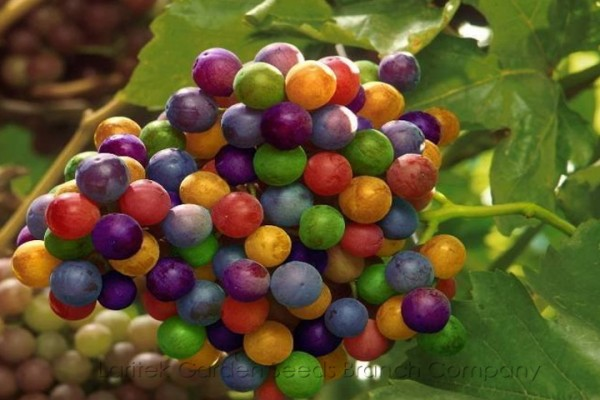

<div class="container-fluid" ng-controller="WinesController">

  <form class="form-horizontal" role="form">
    <div class="form-group has-feedback">
      <div class="col-sm-4">
        <!-- pomoću ng-model se u $scope.searchQuery postavlja vrednost koju je korisnik uneo u input -->
        <input id="searchName" type="text" class="form-control" placeholder="Search by name" ng-model="searchQuery">
        <span class="glyphicon glyphicon-search form-control-feedback"></span>
      </input>
    </div>
  </div>
</form>

<div class="row">

  <div class="col-sm-8">
    <table class="table table-striped">
      <thead>
        <th width="300">
          Name
          <!-- ng-click: klik na link će da pozove funkciju $scope.setSortCriteria i proslediti joj parametar 'name' -->
          <a href="#" ng-click="setSortCriteria('name')"><span class="glyphicon glyphicon-sort"></span></a>
        </th>
        <th>
          Year
          <a href="#" ng-click="setSortCriteria('year')"><span class="glyphicon glyphicon-sort"></span></a>
        </th>
        <th>
          Grapes
          <a href="#" ng-click="setSortCriteria('grapes')"><span class="glyphicon glyphicon-sort"></span></a>
        </th>
        <th>
          Country
          <a href="#" ng-click="setSortCriteria('country')"><span class="glyphicon glyphicon-sort"></span></a>
        </th>
        <th>
          Region
          <a href="#" ng-click="setSortCriteria('region')"><span class="glyphicon glyphicon-sort"></span></a>
        </th>
      </thead>
      <tbody>
        <!-- svaki red će biti po jedno vino - jedan objekat iz kolekcije $scope.wines -->
        <!-- orderBy nam služi za sortiranje prema $scope.sortDirection + $scope.sortCriteria, npr. biće
        orderBy: "+name". Pomoću +/- se reguliše ascending/descending  -->
        <!-- filter -> filtriranje tabele sa vinima prema zadatom kriterijumu. searchWine je funkcija ($scope.searchWine) kojoj će se proslediti jedan red, odnosno jedan objekat na osnovu koga je formiran red - wine objekat. Funckiju implementirati tako da vrati true ukoliko dati red treba da se prikaže, a false ukoliko dati red ne treba da se prikaže-->
        <!-- limitTo:number:start prikazuje number vina počevši od start (paginacija) -->
        <tr ng-repeat="wine in wines | orderBy: sortDirection + sortCriteria | filter: searchWine | limitTo: maxWinesInTable: (activePage-1)*maxWinesInTable" >
          <td>
            <div>{{ wine.name }}</div>

            <!-- Dugme kojim se sakriva/prikazuje div sa id koji odgovara wine.id -->
            <button type="button" class="btn btn-link" data-toggle="collapse" data-target="#{{wine.id}}">Show details</button>

            <!-- collapsable div - kao id mu se postavlja id konkretnog vina -->
            <div class="collapse" id="{{wine.id}}">
              <div></div>
              <div>{{ wine.description }}</div>
            </div>
          </td>
          <td>{{ wine.year }}</td>
          <td>{{ wine.grapes }}</td>
          <td>{{ wine.country }}</td>
          <td>{{ wine.region }}</td>
        </tr>
      </tbody>
    </table>
  </div>

  <div class="col-sm-4">
        <div id="myCarousel" class="carousel slide" data-ride="carousel">
            <!-- Indicators -->
            <ol class="carousel-indicators">
              <li data-target="#myCarousel" data-slide-to="0" class="active"></li>
              <li data-target="#myCarousel" data-slide-to="1"></li>
              <li data-target="#myCarousel" data-slide-to="2"></li>
            </ol>

            <!-- Wrapper for slides -->
            <div class="carousel-inner" role="listbox">
              <div class="item active">
                
              </div>

              <div class="item">
                
              </div>

              <div class="item">
                
              </div>
            </div>

            <!-- Left and right controls -->
            <a class="left carousel-control" href="#myCarousel" role="button" data-slide="prev">
              <span class="glyphicon glyphicon-chevron-left" aria-hidden="true"></span>
              <span class="sr-only">Previous</span>
            </a>
            <a class="right carousel-control" href="#myCarousel" role="button" data-slide="next">
              <span class="glyphicon glyphicon-chevron-right" aria-hidden="true"></span>
              <span class="sr-only">Next</span>
            </a>
          </div>
      </div>


</div>

<div class="row">
  <div class="col-sm-8">
    <div class="text-center">
      <!-- $scope.paginationPagesArr je niz stringova - vrednosti koje trebaju biti prikazane na pagination komponenti ("<", "1", "2", ..., ">"). Ovo se podešava (u WinesController-u) zavisno od izračunatog broja stranica tabele. Iteriramo kroz taj niz pomoću ng-repeat kako bi smo dodali odgovarajuće li podelemente-->
      <ul class="pagination" ng-repeat="i in paginationPagesArr">
        <!-- pomoću {{i}} će u datoj "kockici" biti ispisan i-ti član niza $scope.paginationPagesArr -->
        <!-- ng-class: li tag dobija klasu active ukoliko je i == $scope.activePage -->
        <li ng-class="{'active': i == activePage}"><span ng-click="changePage(i)">{{ i }}</span></li>
    </ul>
  </div>
</div>
</div>

</div>